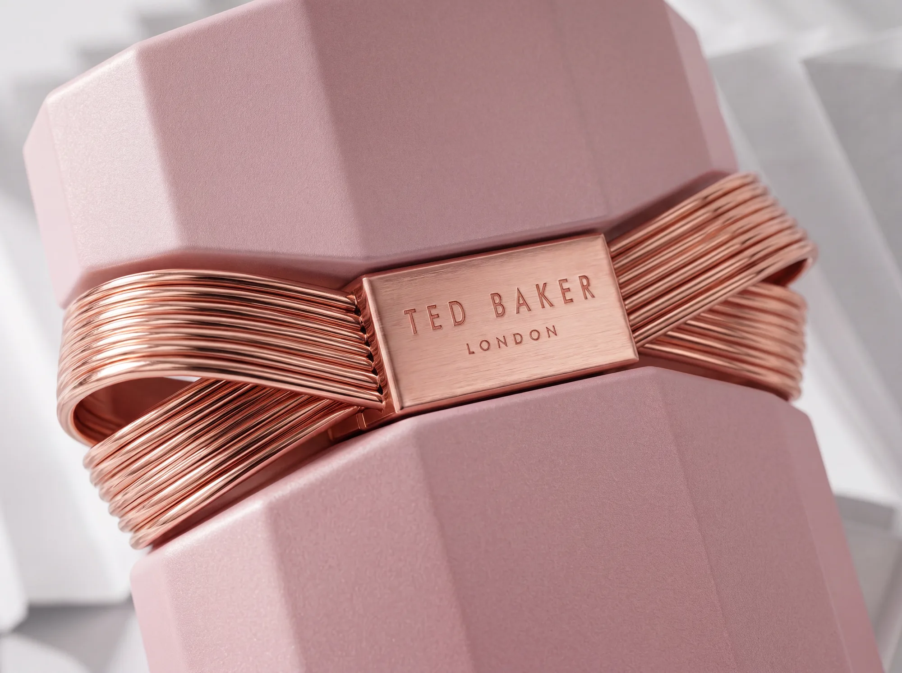
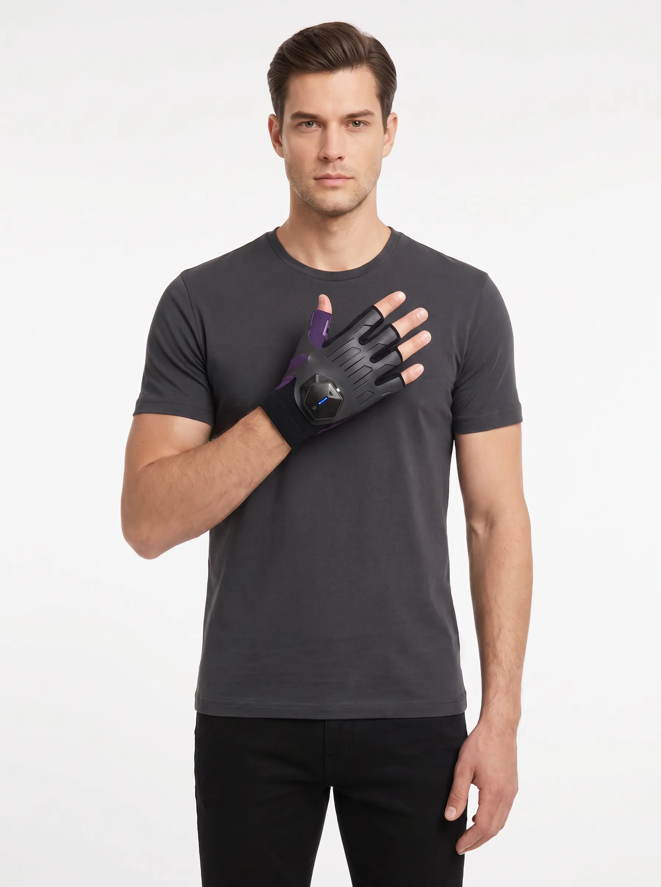
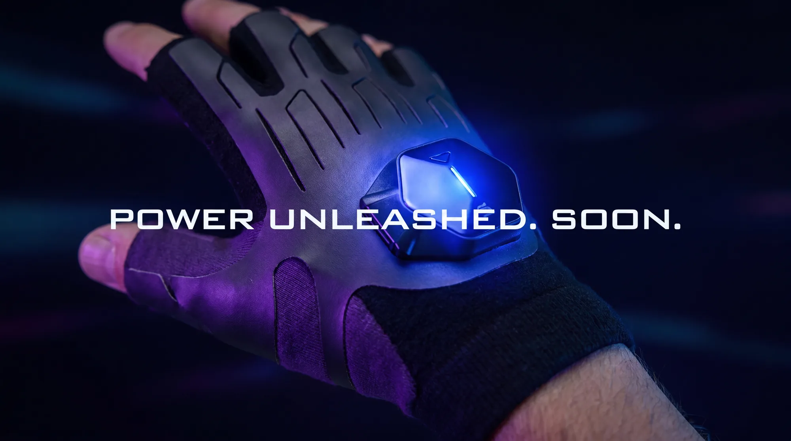
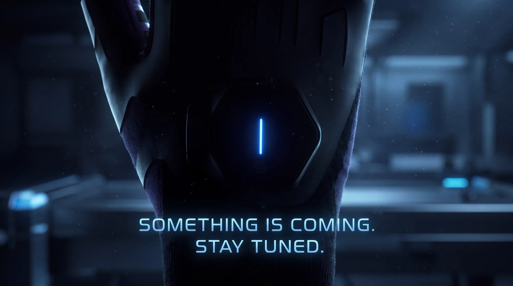

Build your team's content engine
We don't generate your content. We build the system your marketing team uses to generate it themselves — bespoke to your brand, your budget, and the people you already have.
Register interest →AI tools can produce campaign-grade visuals and content, but a marketing team dropped in front of them without a system gets inconsistency, wasted spend, and output that doesn't hold to the brand. AI Campaigns fixes that. We design a framework built around your reality — your existing assets, your monthly budget, your team's skills, and the tools that actually fit — so your team can produce work consistently, on-brand, and in-house, for the medium and long term.
Assessment
We start by understanding where you are — auditing your current assets and content, and mapping your monthly budget and spend. The system has to fit the business as it is, not an idealised version of it.
Workshop
We sit down with your marketing team and build the framework together: the tools, the workflow, the guardrails, and the standards that keep output consistent. It's designed with your people, so they own it.
The system
You come away with a bespoke, repeatable framework your team can run themselves — tailored to your budget and built to stay consistent over time, not a one-off campaign.
Ongoing support
The tools and models don't stand still, so neither do we. We review how the system is working, refine it, and keep it current as the technology evolves — so your team stays ahead instead of falling behind.
You end up with capability, not a dependency. Your team can generate their own content — faster, cheaper, and on-brand — with a system that improves as the tools do.
What the system makes possible, once it's built.



